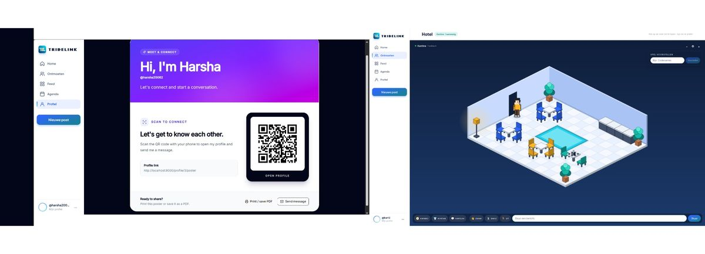
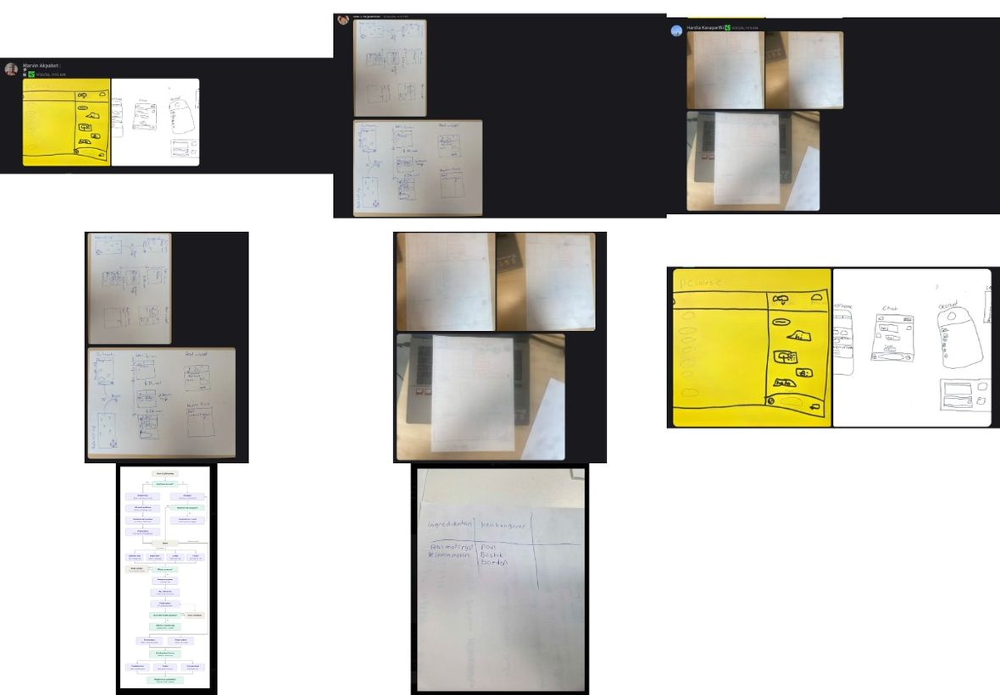
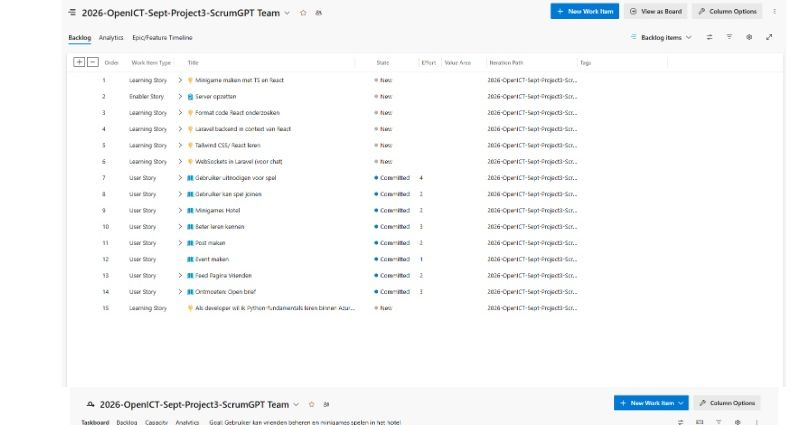
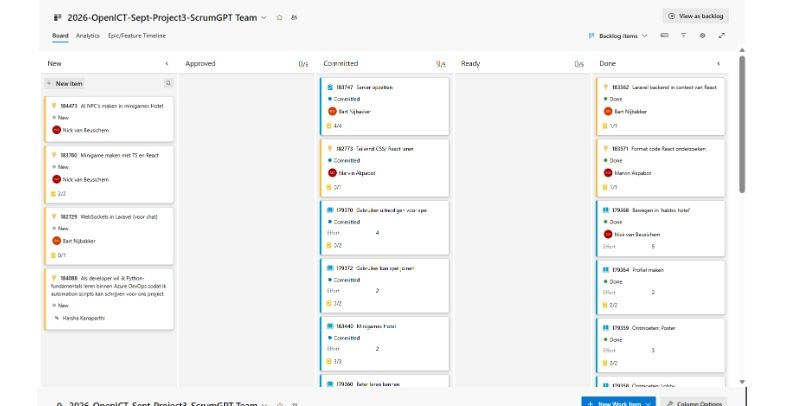
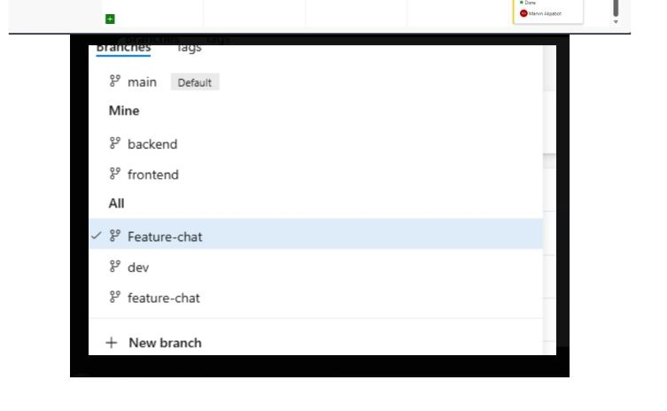
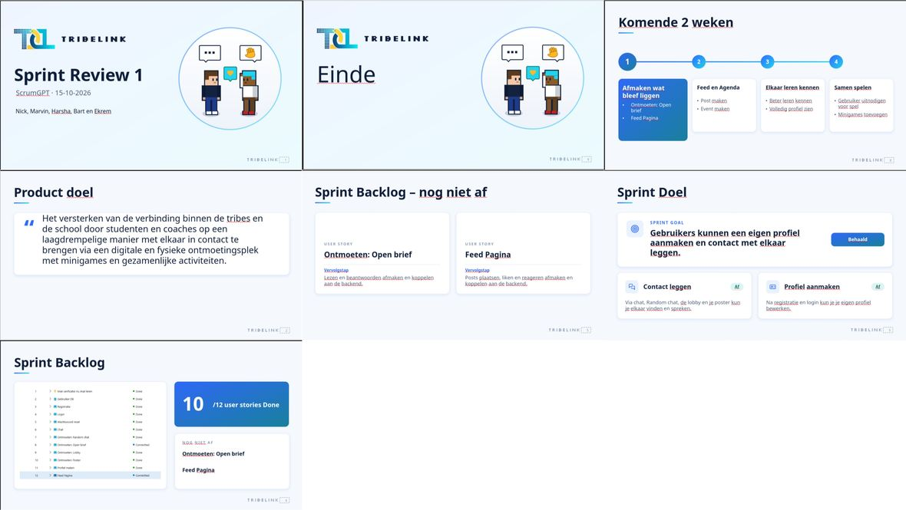
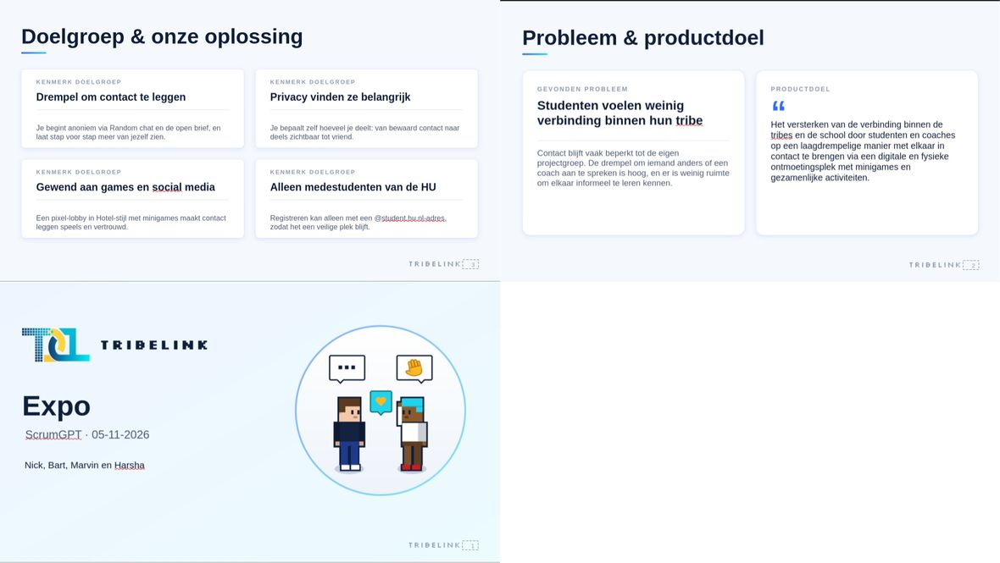
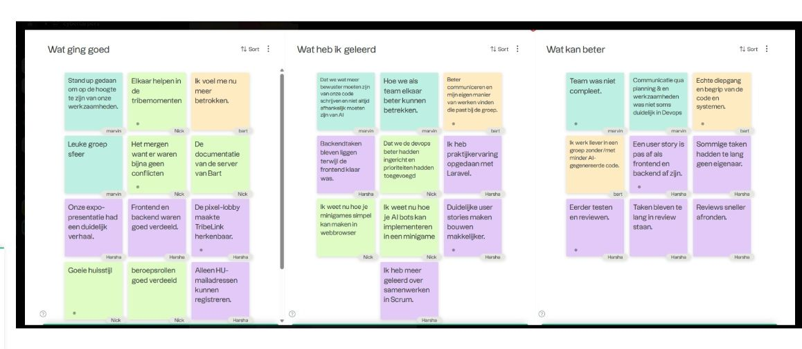
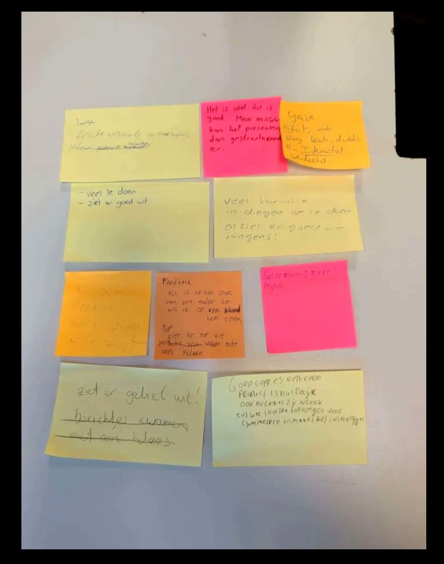

1. Trek een IJsbreker ("Gespreks-Ui")
Welke game, serie of hobby kan jij uren achter elkaar doen zonder de tijd te merken?
Uit onze zes doelgroep-interviews (met o.a. Isabel, Anne-Wil, Reyna, Thian, Abdallah, Kagan en Joshua) bleek één duidelijk probleem: contact binnen Open-ICT stopt vaak bij je eigen squad, en formele kanalen zoals MS Teams of Outlook voelen te zakelijk om zomaar een praatje te starten.
Daarom bouwden wij (Nick, Bart, Marvin en ik — Harsha, met Ekrem in de
beginfase) TribeLink: een veilige digitale én fysieke ontmoetingsplek exclusief voor
@student.hu.nl-studenten en coaches, met een speelse Pixel-Lobby in Hotel-stijl,
minigames, ijsbrekers, open brieven, een fysieke QR-poster en groepsactiviteiten.
Bij onze Sprint 1 Review (15 oktober) kregen wij een gouden tip uit de zaal: "Meer focus op het hotel in plaats van just another website — alle functies rond het spel bouwen!" Klik hieronder op een tegel of gele stoel om rond te lopen, ga naast een medestudent zitten en start een potje.
@nick_vb: Welkom in het TribeLink Hotel! Klik op een tegel om te lopen.
@bart2: De Ubuntu server hu-s1p3-tribelink draait stabiel, test gerust de chat!
Uit ons interview met Isabel bleek dat een kort spelletje de makkelijkste manier is om het ijs te breken zonder ongemakkelijke stiltes. Speel hier direct een ronde tegen onze LobbyBot!
Jij speelt met X tegen LobbyBot (O). Klik op een vakje!

@harsha20062) en rechts onze isometrische Hotel-kamer.
Niet iedereen stapt even makkelijk op een onbekende af. Daarom combineren we drie contactvormen: een gespreksstarter op basis van de "gespreks-ui" uit ons interview met Anne-Wil & Reyna, een asynchrone Open Brief als er even niemand live is, en een fysieke QR-Poster.
Welke game, serie of hobby kan jij uren achter elkaar doen zonder de tijd te merken?
Niemand vrij voor Random Chat? Laat een open brief achter zodat een andere student later kan aanhaken.
Zoals ik bij onze Sprint 1 Review toelichtte: met een QR-code voeg je iemand uit een andere tribe in één tel toe zonder onhandig usernames over te typen.
Scan om mijn TribeLink-profiel te openen en een bericht te sturen.
Geen tribe-leden gevonden met deze interesse.
Uit ons interview met Thian en Abdallah bleek dat studenten een simpele brug van online naar echte uitjes (zoals bowlen of koffie) misten. Stem hieronder op een datum of plan zelf een activiteit!
Gebruik onderstaande tabbladen (ook met pijltjestoetsen te bedienen) om al onze tussenproducten te bekijken: van onze interviews, persona's en keuzematrix in Week 0 tot Azure DevOps, Git, Ubuntu Server, RetroTool en onze 9 ontvangen Expo post-its op 5 november 2026.
In de eerste week hielden we onze laptops bewust dicht bij het brainstormen en spraken we eerst met zeven betrokkenen (ik interviewde zelf Isabel; Bart sprak Anne-Wil & Reyna; Marvin sprak Thian, Abdallah, Kagan & Joshua). Daaruit leidden wij drie persona's af: de Extraverte Organisator (Nathalie/Milan), de Introverte Zoeker (Kees/Bram) en de Betrokken Coach/Mentor (Mark/Sander).
| Criterium (Knock-out voldaan: Digitaal, Interactief, Zelfstandig) | Optie 1: Klassiek Sociaal Platform (Feed & Profiel) | Optie 2: Habbo-stijl Pixel-Lobby Hotel + Minigames | Optie 3 (Gekozen combinatie): TribeLink (Hotel + Stap-voor-stap Profiel & QR-Poster) |
|---|---|---|---|
| 1. Verbinding binnen & tussen tribes | 3 / 5 | 4 / 5 | 5 / 5 (digitaal ontmoeten + fysieke QR-poster) |
| 2. Betekenisvolle interactie | 3 / 5 | 5 / 5 | 5 / 5 (rondlopen, minigames, ijsbrekers, stemmen) |
| 3. Duidelijkheid | 5 / 5 | 4 / 5 | 4 / 5 (heldere menu-indeling rond de lobby) |
| 4. Waarde voor alle 3 persona's | 3 / 5 (mist spel voor introverten) | 4 / 5 | 5 / 5 (veilig voor Kees/Bram én actief voor Nathalie/Milan) |
| 5. Haalbaarheid in 2 bouwsprints | 5 / 5 | 3 / 5 (3D te zwaar, 2D isometrisch wel!) | 4 / 5 (haalbaar met React + Laravel taakverdeling) |
| 6. Team-energie & Originaliteit | 2 / 5 ("weer een gewone site") | 5 / 5 | 5 / 5 (unieke feel waar het hele team enthousiast van werd) |
| 7. Veiligheid & Privacy (HU-mail + consent) | 4 / 5 | 3 / 5 | 5 / 5 (@student.hu.nl eis + stapsgewijs delen) |
| Totaalscore | 25 / 35 | 28 / 35 | 33 / 35 (Winnaar!) |

In Onepager 06 schreven we eerst individueel en als groep onze User Stories uit met MoSCoW-prioriteit,
acceptatiecriteria én professionele kwaliteitscriteria (zoals WCAG 2.1 AA, AVG dataminimalisatie en NNG
reactiesnelheid < 100ms). Tijdens Planning Poker namen we een eenvoudige story als
referentie van 2 Story Points en schatten we de backlog in binnen
Azure DevOps (2026-OpenICT-Sept-Project3-ScrumGPT Team).



main, dev, frontend, backend, Feature-chat)
en merge-reviews.
Ons Sprintdoel voor Sprint 1 luidde: "Gebruikers kunnen een eigen profiel aanmaken en contact met elkaar
leggen." Aan het einde van Sprint 1 hadden wij 10 van de 12 User Stories op Done
(o.a. HU-mail verificatie, registratie, login, wachtwoord-reset, chat, random chat, lobby en QR-poster).
Alleen het koppelen van Open brief en Feed Pagina aan de Laravel-backend schoven door naar
Sprint 2. Daarnaast draaide TribeLink op een eigen Open-ICT Linux server (hu-s1p3-tribelink,
Ubuntu Server 26.04.1 LTS op IP 45.132.41.76).

In Sprint 2 werkten wij met vier actieve leden (Nick, Bart, Marvin en ik) de openstaande Laravel-koppelingen af, breidden het Hotel uit met minigames en presenteerden TribeLink op de grote S1-Expo van 5 november 2026.



NAAM User Story: Veilige HU-Domeincheck & Gelaagde Profielvrijgave
BESCHRIJVING (vast HU-format):
"Als terughoudende eerstejaars student (zoals persona Kees/Bram) wil ik dat alleen
geverifieerde @student.hu.nl-accounts toegang krijgen én dat mijn echte contactgegevens pas
zichtbaar worden nadat wij allebei een vriendschapsverzoek hebben geaccepteerd (mutual consent),
zodat ik veilig en zonder angst voor buitenstaanders of datalekken nieuwe tribe-genoten kan leren
kennen in het Hotel en de Random Chat."
PRIORITEIT: Must Have
@student.hu.nl (of @hu.nl voor coaches) met een duidelijke Nederlandse melding.bcrypt) en nooit in platte tekst bewaard.Request-validatie, database-migraties en gehashte wachtwoorden) toegangsbeveiliging en dataminimalisatie afdwingt.laravel.com/docs/validation) en OWASP Authentication Cheat Sheet (cheatsheetseries.owasp.org).autoriteitpersoonsgegevens.nl).<label>-elementen en aria-live="polite" conform W3C WCAG 2.1 AA (w3.org/WAI/WCAG21/quickref).Geen verslavend tracking-algoritme (bewust op Won't Have gezet!) en dataminimalisatie: je start met een roepnaam/schuilnaam en geeft via Mutual Consent pas meer vrij zodra jij dat wilt.
Registratie is afgeschermd op @student.hu.nl zodat buitenstaanders niet in de tribe-omgeving
komen, wachtwoorden zijn versleuteld en onze Ubuntu Server (hu-s1p3-tribelink) draait achter gecontroleerde SSH-toegang.
Ontworpen voor zowel extraverte als introverte studenten (inclusieve persona's), met hoog contrast, toetsenbordbediening, ondersteuning voor 200% browser-zoom en mobiele duimnavigatie onderaan.
In plaats van zware 3D-engines of AI-matching kozen wij voor een lichtgewicht 2D isometrische lobby en een compacte 2-core virtuele server (4 GiB RAM), wat het stroomverbruik in zowel browser als datacenter laag houdt.
TribeLink draait soepel in elke standaard webbrowser op oudere telefoons en bestaande studentenlaptops, zonder zware app-installaties of nieuwe hardware-eisen.